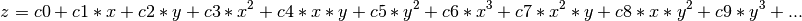

pyoptools.misc.Poly2D¶
Available Classes¶
- class pyoptools.misc.Poly2D.poly2d¶
Class to define a 2D polynomial

AVAILABLE METHODS
- dxdy(self)¶
Function that calculates the derivative with respect to X and Y of a given polynomial represented as a matrix.
Return Value
- (dx,dy)
- Tuple containing the Poly2D representing de derivative with respect to X, and the Poly2D containing the derivative with respect to Y
Note: this method gets cached the first time it is called. If you modify the cohef attribute, the cache does not get updated
- eval(self, x, y)¶
Evaluate the polynomial at x,y
This is the general method written in numpy. In this method x and y can have any shape (number, vectors, matrices, etc). Because of its generality, this method is not the fastest.
- Arguments:
x Number, vector or matrix containing the values of x where the polynomial is goint to be evaluated. y Number, vector or matrix containing the values of y where the polynomial is goint to be evaluated.
Return Value:
This method returns the polynomial evaluated Z=P(X,Y). Z will have the same shape as X and Y
In order to increase speed, use peval to evaluate for a single point, or meval to evaluate for 2D matrices
- eval_2(self, x, y, key)¶
- gpu_eval(self, np.ndarray[, np.float64_t, ndim=1], x, np.ndarray[, np.float64_t, ndim=1], y)¶
Evaluate the polynomial using the GPU, x and y are vectors
This method is similar to vveval, but using the GPU
- gpu_eval1(self, samples)¶
- Evaluate the polynomial between -1 and 1 using the gpu
- meval(self, np.ndarray[, np.float64_t, ndim=2], x, np.ndarray[, np.float64_t, ndim=2], y)¶
Evaluate the polynomial at for the values given in the 2D matrices x, y.
- Arguments:
x 2D matrix the values of x where the polynomial is going to be evaluated. y 2D matrix the values of y where the polynomial is going to be evaluated.
Return Value:
This method returns the polynomial evaluated Z=P(X,Y). Z will have the same shape as x and y
- mevalr(self, np.ndarray[, np.float64_t, ndim=2], x, np.ndarray[, np.float64_t, ndim=2], y, double rot=0)¶
Evaluate the polynomial at for the values given in the 2D matrices x, y rotated.
- Arguments:
x 2D matrix the values of x where the polynomial is going to be evaluated. y 2D matrix the values of y where the polynomial is going to be evaluated. rot Angle to rotate the coordinate points x,y before evaluating the polynomial. Given in radians
Return Value:
This method returns the polynomial evaluated Z=P(x’, y’). Z will have the same shape as x and y. x’ and y’ are calculated from rotating x and y
- peval(self, double x, double y)¶
Evaluate the polynomial at the point x,y
- Arguments:
x Floating point number containing the x value used to evaluate the polynomial. y Floating point number containing the y value used to evaluate the polynomial.
Return Value:
This method returns the polynomial evaluated z=P(X,Y).
- vveval(self, np.ndarray[, np.float64_t, ndim=1], x, np.ndarray[, np.float64_t, ndim=1], y)¶
Evaluate the polynomials in a 2D mesh defined by the vectors x and y.
- Arguments:
x 1D vector with the values of x where the polynomial is going to be evaluated. y 1D vector with the values of y where the polynomial is going to be evaluated.
Return Value:
This method returns the polynomial evaluated Z=P(x,y). Z will have the shape (nx, ny), where nx is the lenght of the x vector, and ny is the lenght of the y vector.
This method is not really faster than meval, but it might be useful when doing parallel programing paralelising, because needs to transfer a smaller amount of information to the child processes (vectors instead matrices).
Available Functions¶
- pyoptools.misc.Poly2D.i2pxpy(i)¶
Method that returns the x and y powers for a given poly index
index 0 1 2 3 4 5 6 7 8 9 10 11 12 13 14 ... xpower 0 1 0 2 1 0 3 2 1 0 4 3 2 1 0 ... ypower 0 0 1 0 1 2 0 1 2 3 0 1 2 3 4 ... pol_order 0 1 1 2 2 2 3 3 3 3 4 4 4 4 4 ...
- pyoptools.misc.Poly2D.ord2i(o)¶
Method that returns the number of coeficients of a polynomial of order o
order 0 1 2 3 4 ... i 1 3 6 10 15 ...
- pyoptools.misc.Poly2D.pxpy2i(int px, int py)¶
- Method that returns the index given power in x and the power in y